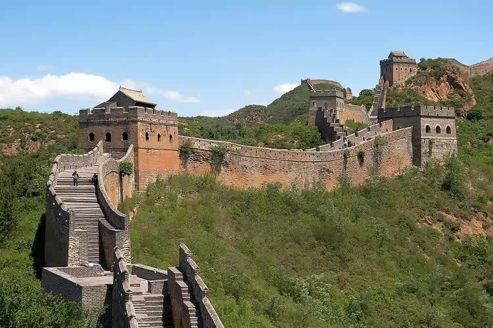
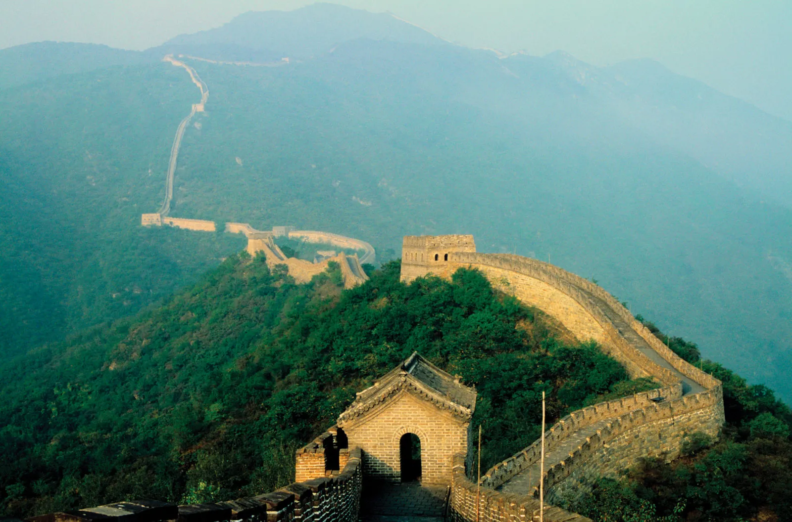

על המקוםהחומה הגדולה של סין (גם החומה הסינית או החומה הסינית הגדולה) היא מערכת ביצורים מאדמה, מלבנים ומאבנים בצפון סין, שנבנתה ושופצה פעמים רבות בין המאה ה-5 לפנה"ס למאה ה-16, ומטרתה הייתה להגן על האימפריה הסינית מפני פשיטות של ברברים ממונגוליה וממנצ'וריה. מאז המאה ה-5 לפנה"ס נבנו כמה חומות שכונו החומה הגדולה. אחת המפורסמות שבהן הייתה חומה שנבנתה בין השנים 220 ל-206 לפנה"ס על ידי קיסר סין הראשון, צ'ין שה-חואנג משושלת צ'ין, שממנה נותרו שרידים מעטים בלבד. החומה ששרדה עד ימינו נבנתה בתקופת שושלת מינג במאה ה-15 וה-16. החומה הגדולה נמשכת משָׁאנְהָאיגְווָאן במזרח עד לופ נור במערב, לאורך קשת המתווה באורח גס את גבולה הדרומי של מונגוליה הפנימית. המחקר הארכאולוגי המקיף ביותר בנושא נערך בשנת 2009, והשתמש בטכנולוגיות מתקדמות. המחקר הגיע למסקנה שהחומה הגדולה כולה, הכוללת גם את חומות המשנה המסתעפות ממנה, היא באורך של 8,851 ק"מ. באורך זה כלולים 6,259 קילומטרים של קטעי חומות של ממש, 359.7 קילומטרים של חפירים ו-2,232 קילומטרים של מחסומי הגנה טבעיים כדוגמת הרים ונהרות. החומה הגדולה של סין הוכרזה כאתר מורשת עולמית בשנת 1987. |
  |